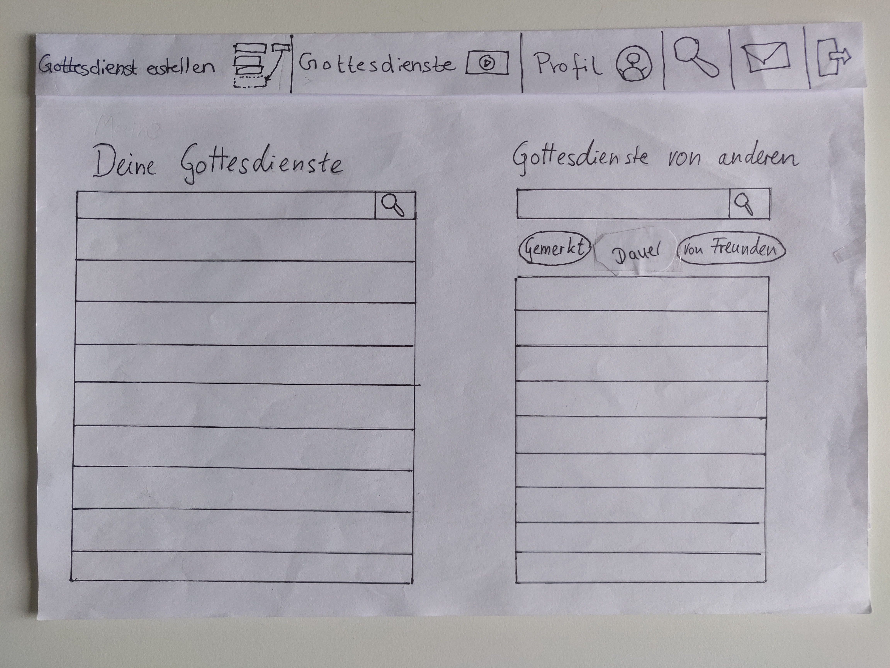
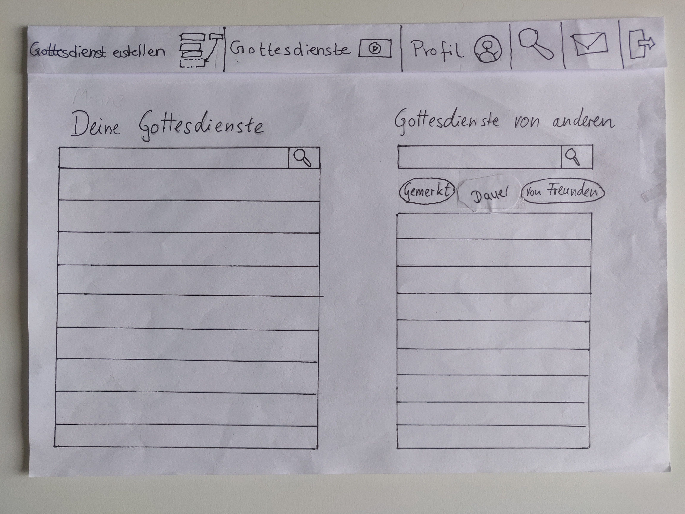

User Centered Design Projekt
BuildYourOwnGottesdienst: Contextual Design Projekt vom Anfang bis zu einem klickbaren Prototypen
| Projekt | Uni-Projekt in 4er Gruppe |
|---|---|
| Aufgabe | Besonders während der Corona-Pandemie, aber auch sonst ist es vielen Menschen nicht möglich einen Gottesdienst vor Ort in der Kirche zu besuchen. Ziel unseres Projekts war es, eine Lösung zu schaffen, mit der das Online-Gottesdiensterlebnis verbessert wird |
| Dauer | 6 Monate |
| Einschränkungen | Durch die Corona-Pandemie mussten wir den größten Teil des Projekts online durchführen |
| Erfahrungen | User-Interviews, Affinity-Mapping, Visioning, Prototyping (auf Papier & in Figma), User-Testing, ... |
1. Die Nutzer:innen verstehen
Contextual Inquiry
Zu Beginn des Projekts war es natürlich wichtig, ein gutes Verständnis für die bisherige Situation zu gewinnen und die Nutzer:innen genau zu verstehen. Dafür haben wir insgesamt fünf Nutzer:innen von Online-Gottesdiensten interviewt und sie auch beim Besuch eines Online-Gottesdiensts digital begleitet. Interessante fragen waren für uns zum Beispiel:
- Wie und wo werden Online-Gottesdienste besucht?
- Welche Angebote gibt es?
- Was gefällt den Leuten an Online-Gottesdiensten?
- Welche Probleme gibt es?
- …
In der Nachbesprechung jedes Interviews interpretierten wir die neuen Erkenntnisse und hielten jede einzelne Erkenntnis auf Post-It-Notes (Affinity-Notes) fest.

Data Consolidation
Um alle gesammelten Informationen zu organisieren, erstellten wir ein Affinity-Diagramm. Wir gruppierten alle zuvor erstellten Affinity-Notes in wiederkehrende Themen und organisierten sie in einer hierarchischen Struktur. Als Ganzes bietet das Affinity-Diagramm ein umfassendes Bild der Probleme und Bedürfnisse unserer Nutzer:innen, was wir auch später nutzen konnten, um uns diese Informationen neu ins Gedächtnis zu rufen. Neben dem Affinity-Diagramm fertigten wir auch mehrere Contextual-Design-Models an.


2. Ideen generieren
Wall-Walk
Um konkrete Ideen für unsere Problemstellung zu generieren, führten wir zunächst einen Wall-Walk durch. Dazu holten wir auch Personen von außerhalb des Projektteams dazu, um mehr einzigartige Blickwinkel auf unsere Daten zu gewinnen. Wir gingen das Affinity Diagramm und alle CD-Models aufmerksam durch und notierten die wichtigsten, übergreifenden Erkenntnisse und auch alle Ideen, die uns einfielen, um die Probleme der Nutzer:innen zu adressieren.
Visioning
Für die besten und vielversprechendsten Ideen fertigten wir gemeinsam im Projektteam Visions an, in denen wir eine Geschichte erzählten, wie das Leben der Nutzer:innen mit einer konkreten Idee aussehen könnte.

Diese Visions evaluierten wir und erarbeiteten daraus eine finale Vision eines Produkts, die die Vorteile der anderen in sich vereint.

3. Definition des Produkts
Prototyping
Aufgrund des beschränkten Rahmens unseres Projekts entschieden wir uns, nur einen Aspekt unserer Vision als Papier-Prototypen auszuarbeiten.
Mit dem Gottesdienst-Baukasten können Nutzer:innen aus vorgefertigten Modulen ihren eigenen Gottesdienst zusammenstellen und mit anderen Personen teilen und gemeinsam anschauen.

 


Testing
Unseren Papier-Prototypen testeten wir dann in zwei Iterationen mit insgesamt fünf Nutzer:innen. In den Tests sollten die Nutzer:innen den Prototypen selbst bedienen und alle Funktionen explorieren. Dabei wurden auftretende Probleme direkt besprochen und mögliche Design-Änderungen erarbeitet. So konnten wir den Prototypen in vielen Aspekten optimieren und nützliche Funktionalität hinzufügen. Den so entstandenen, überarbeiteten Prototypen setzten wir als letztes als digitalen, klickbaren Prototypen in Figma um.